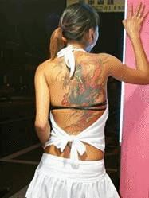
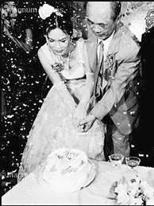

Tiền Phong - Chị Loan gần như là "đại ca", ông chủ lấy bà vợ Thái Lan, mở điểm mát xa này, nhưng lại toàn thuê cô dâu Việt đến làm. Tất cả đều chạy trốn chồng, chỉ có tôi là người duy nhất không chạy trốn chồng mà chạy trốn chính thân phận mình.

Tôi đã có trong tay một lưng vốn khá. Khi chuyển sang quán mát xa Thái, tôi cũng đã cân nhắc.
Từ chỗ bị người ta sờ mó thân thể, chuyển sang chỗ sờ mó thân thể người ta, thì nào khác gì nhau? Còn chần chừ gì nữa?
Chị Loan tình nguyện chỉ dẫn tôi từ bước đầu tiên, chị kêu một con bé người Cần Thơ phải nằm làm "người mẫu" cho tôi thực tập.
Chồng chị Loan từng treo thưởng cho ai bắt được chị mang về. Tôi cũng đã thấy thông báo của ông trên diễn đàn "chú rể Đài Loan", tôi nhận ra là ông bởi vì có đăng kèm ảnh chị Loan, đứng bên chiếc xe máy cũ, trong một buổi đi chợ về. Thông báo tìm người của ông chồng chị Loan có tiêu đề: "Truy tìm ái thê".
"Chồng có lý của người Đài, vợ có lý của người Việt, và vì thế, sự chênh lệch văn hóa mới là kẻ mắc lỗi. Chúng ta đã dùng những thước đo lệch để đo đời nhau. Vì thế, mãi mãi không thỏa nguyện"
Về bố cục và cách thức, "Truy tìm ái thê" gợi nhớ đến những thông báo "Truy tìm chó yêu đi lạc", về nội dung, đều chủ yếu viết là chủ nhân tiếc rẻ, muốn có lại được thứ từng là tài sản của mình.
Những chủ nhân của cô dâu Việt đang tìm kiếm những người vợ ngoại quốc chạy trốn, mà những người vợ ấy chạy trốn lại bởi muốn được là chủ nhân của chính cuộc đời mình.
Khi đó, tôi lên mạng để liên hệ với người chị họ đang ở Hoa Liên. Tôi đã không gặp chị từ khi tôi đang sống với Trương Văn Huy. Chị khuyên giải tôi bỏ hắn không được, đã quyết định mặc kệ tôi xoay xở.
Chị mà biết tôi đang ở đâu, làm gì, chắc chị chết ngất. Mỗi lúc rời quán cà phê Internet về, lòng tôi rã rời, nhớ con, buồn bã, thấy vô vọng.
Có một người khách theo tôi từ quán Karaoke sang quán mát xa Thái, đó là ông Lữ. Ông ngoài năm mươi, người cao lớn, rất cao, hơi có bụng nên dáng đi bệ vệ.
Ông rất thích tôi, ông càng thích hơn khi tôi luôn từ chối đi Motel (nhà nghỉ cao cấp ở đây) với ông. Ông biết tôi không chỉ từ chối ông mà từ chối tất thảy mọi lời mời mọc khác.
Ông Lữ không chỉ đơn giản là phải bấm số thang máy cao thêm một tầng nữa mỗi lần tới tìm tôi. Sự theo đuổi của ông còn nhiều hơn cả về thời gian lẫn vật chất.
Ông boa cho tôi hậu hĩnh, thích nấn ná nói chuyện riêng với tôi, tới mức chị em ở cả hai tầng đều biết ông Lữ thích tôi.
Hôm nào xin được nghỉ một buổi, cả mấy chị em đều tíu tít trên chiếc xe bảy chỗ của ông, chị Loan ưu ái bắt tôi lên ngồi ghế cạnh lái xe. Chị nói, tìm được người Đài không khinh người Việt như ông này, khó lắm.
Không hiểu sao tôi lại thích chiếc xe bảy chỗ hơi cũ của ông Lữ, hơn mọi chiếc bốn chỗ đời mới chực chờ dưới đường. Vì nó gợi lên cảm giác gia đình.
Tôi chìm ngập trong những suy nghĩ của riêng mình trên suốt những chặng đường dài bên ông Lữ. Hoặc đôi khi nhìn xuống đôi bàn tay, tôi không giữ được bộ móng tay đẹp nữa kể từ khi trầm luân, rửa bát gọt trầu, đấm bóp bưng bê.
Cũng có thể coi là kể từ khi không còn ai cầm lấy đôi bàn tay tôi nâng niu, ấp ủ. Bao lâu rồi nhỉ, mới chỉ mấy tháng nhưng sao tôi thấy dằng dặc như một đời người.
Phải chăng phụ nữ đẹp nhất là khi có người để yêu dấu. Giờ tôi đẹp với ai?
Chị Loan đi làm gái chỉ vì cần tiền, thật nhiều tiền. Chị nói giá như chị có duyên với khách như ông Lữ, chắc chị đã gật đầu từ lâu rồi.

Chị cần tiền để chữa bệnh liệt giường cho ông anh trai. Anh trai chị vừa tốt nghiệp Đại học Kiến trúc thành phố. Anh là hy vọng của cả gia đình. Chị đi lấy chồng Đài Loan để có tiền phụ ba mẹ nuôi anh học đại học.
Anh trai chị Loan bị xe khách kéo lê chục mét ngoài ngã tư giao lộ gần công ty anh, nơi anh mới đi làm được bốn tháng. Anh trở thành tàn phế, một người sống thực vật, không nhận thức được gì nữa.
Một đêm, tôi đã khóc rất lâu cùng chị Loan. Tôi thấu hiểu nỗi đau của chị tới tận tâm can, vì ký ức tôi từng có những mẩu xe đạp nát bét dính máu anh trai, tôi biết có những thứ tôi sẵn sàng chết để đánh đổi lại số mệnh nhưng không được.
Tôi tin chị Loan chạy trốn chồng không phải vì chồng chị tồi tệ, chị đi làm gái vì tham tiền nhưng không phải là tiền cho bản thân mình.
Tiếc thay, những người tốt lại thường không được báo đáp. Một cô dâu ở chỗ tôi đã nhận xét, bà nào tử tế thì sẽ gặp ông chồng Đài Loan chẳng ra gì, còn vô số ông chồng Đài Loan tử tế lại gặp phải bà vợ Việt Nam chẳng ra gì, đời nó thế!
Tôi nghĩ khác, tôi nghĩ ai cũng có lý. Chồng có lý của người Đài, vợ có lý của người Việt, và vì thế, sự chênh lệch văn hóa mới là kẻ mắc lỗi. Chúng ta đã dùng những thước đo lệch để đo đời nhau. Vì thế, mãi mãi không thỏa nguyện.
Lần đầu tiên trong đời, tôi nhận lời làm gái bao. Ông Lữ cho đến giờ nhìn lại, có lẽ là người đàn ông Đài Loan tử tế nhất mà tôi gặp. Ông tử tế bởi vì ông sòng phẳng với tôi.
Cho đến lúc chia tay, ông không nợ gì tôi, ông cũng không làm tôi nợ nần vấn vương gì ông, chia tay thanh thản như một người bạn.
Tôi có nghĩ tới Nhan Bách Bân, anh yếu đuối tới mức không bảo vệ được tôi, càng không mang lại cho tôi cái gì ngoài những ảo tưởng về tình yêu.
Tôi nghĩ tới Dương Lý Huy quá lịch sự, quá đời nhưng luôn giữ khoảng cách với tôi, làm cho tôi thấy mình chẳng có được bất cứ mối ràng buộc nào với ông để có thể an tâm.
Tôi cũng nghĩ tới Trương Văn Huy, đối xử với tôi rất tồi tệ, là một thằng đểu đã lấy tình yêu ra làm cớ để khỏi phải trả tiền chơi đĩ.
Và những kẻ như chồng tôi, như ông chủ quán đã hãm hiếp tôi, họ chỉ coi tôi là công cụ, không hề coi tôi là người.
Nếu thực sự có tình cảm, thì phải hành động, họ không đáng được so sánh với ông Lữ.
Ông Lữ cũng là người khách đầu tiên tôi ngủ cùng, chỉ là bởi tôi cô đơn mà thôi. Trong ái ân, tôi không tìm lạc thú, mà tôi tìm nơi ký thác những gì sâu kín và thiêng liêng hơn, tôi tin ông Lữ cũng không chỉ đi tìm kiếm cảm giác, bởi nếu thế, thì ông có thể có bao nhiêu lựa chọn, ngoài tôi.
Ông Lữ thích nói chuyện, tôi thích lắng nghe ông. Ông cũng lắng nghe tôi một cách bao dung. Tôi chỉ nhỏ bằng tuổi con gái lớn của ông mà thôi.
Còn một ý nghĩ chua chát khác làm tôi bật khóc, làm gái bao thực ra cũng chỉ khác làm gái mát xa ở một điểm thôi, đó là phải xoa bóp thêm một chỗ nữa trên cơ thể khách hàng, chỉ thế thôi.
Gần lắm với bỏ trốn là chạy trốn, gần lắm với bỏ chồng là li thân tự lo, gần lắm với làm thuê lấy tiền là ngủ thuê lấy tiền, gần lắm với bị hiếp là để cho hiếp, gần với khoe thân thể bán trầu cau là khoe thân thể bán thân thể, cũng như gần lắm với mát xa là vuốt ve làm tình.
Thế mà tôi lại thấy, tôi luôn lựa chọn thứ tốt hơn trong những khả năng có thể, thế mà lúc nhìn lại, sao thấy tôi đã đi quá xa khỏi ngày đầu tiên, tôi đã quá xa với tôi ngày xưa.
Trời ơi, tôi đã làm gì đời tôi thế này?
Tôi gặp lại Dương Lý Huy chính trong thời điểm này. Một tối thứ sáu trời mưa, tôi và ông Lữ ngồi uống rượu trong một quán bar sang trọng, ông cho tôi một túi tiền nặng.
Lễ vật của ông Lữ dành cho tôi là một túi giấy xi măng đựng tiền nặng tay, những tờ một nghìn Đài tệ lấp lánh lên màu xanh. Nhìn là biết nó đi thẳng từ máy đếm tiền ngân hàng ra, chưa hề qua tay ai.
Đầm Nhật Nguyệt đêm ấy nổi gió giông đầy trời, mây kéo đen kịt, gió như quét hết những bụi bặm trên trần gian lên trời, để lại cõi không lạnh lùng, bụi trần vốn là thứ giữ hơi ấm quanh con người, giờ như thể chưa từng tồn tại.
Say quá, ông Lữ kéo tôi về trên một chuyến taxi chạy ngang, ông bỏ xe lại trong bãi đỗ xe của quán bar này.
Tôi vừa xách túi tiền vừa dìu ông Lữ lên xe. Cửa xe mở, Dương Lý Huy nhìn tôi trừng trừng kinh ngạc. Chỉ một thoáng thôi, rồi ông ân cần giúp tôi đưa ông khách cao to và nặng nề lên xe.
Trên xe, ông Lữ say quá, tuột áo tôi bắt làm tình ngay trên băng ghế sau. Tôi bị ép dựa ngửa vào bao tiền, một cọc giấy bạc một nghìn tệ rơi ra qua miệng bao buộc không kín, lăn xuống sàn xe.
Khi dừng ở ngã tư đèn đỏ, tôi không biết nên kéo lại vai áo hay cúi xuống nhặt tiền rơi dưới sàn xe. Tôi chỉ biết nhìn chằm chằm vào gáy Dương Lý Huy, cay đắng và muốn bật khóc. Không có tính từ nào tả lại được cảm giác của tôi lúc đó. Giá như tôi đừng sinh ra trên đời này.
Qua gương chiếu hậu, Dương Lý Huy căng thẳng và đờ đẫn nhìn thẳng về phía trước, như thể không để ý tới phía sau, không nhìn gương chiếu hậu. Hoặc giả như thể quen thuộc với cảnh này.
Tôi sợ cứ đi thế này, ông sẽ đâm xe vào một vực sâu bên đường để kết thúc tất cả.
Xe chạy tới Hàn Bích Lầu. Ông Lữ có thẻ VIP của rất nhiều câu lạc bộ và sân Golf, không biết ông có phải là VIP của Hàn Bích Lầu không. Nơi đây tôi từng chấm một dấu chấm đánh dấu ngày tôi còn nằm viện trong cơn đau chia lìa ở thành phố Đài Trung, ngày tôi còn chưa là gì của Nhan Bách Bân.
Từ khi là một chấm trên bản đồ, tới khi dựa cửa nhìn ra mặt hồ gió động, đã bao thăng trầm đời tôi, được trả bằng nước mắt, thời gian và sự tan vỡ tâm hồn.
Tôi còn giữ lại được sự thiện lương, như thứ bấu víu cuối cùng, là điểm cứu rỗi để sau này tôi còn tư cách để làm mẹ của con trai tôi.
Giật mình, tôi tự hỏi, vì sao lâu nay tôi chưa bao giờ dính bầu? Một nỗi lo lắng mơ hồ dâng lên trong tim tôi.
Tôi đang theo học lớp làm móng tay. Học mất hai tháng, ông Lữ cho tôi toàn bộ tiền học phí hơn ba nghìn đô, tôi thành thạo và đã rất có năng khiếu lại có duyên với khách hàng. Bà chủ tiệm dạy nghề đề nghị tôi ở lại làm nhân viên cho bà.
Tôi từ chối, vì tôi đã có ông Lữ lo cho tôi tất cả mọi thứ tiền nong, tôi đâu cần phải kiếm sống. Bây giờ, cái điều tôi muốn làm nhất là quay trở lại quán Karaoke, làm tặng cho mỗi chị em một bộ móng tay tuyệt đẹp, với móng giả của Nhật, sơn màu nước của Hàn Quốc, sơn bóng của Pháp. Tôi muốn cảm ơn họ đã giúp đỡ tôi trong những ngày gian khó.
Khi tôi đến, phát hiện ra quán tầng năm và tiệm mát xa tầng sáu đều đã bị cảnh sát Đài Loan dẹp từ bao giờ. Chủ quán, chị Linh, chị Loan, các chị em khác đã bị bắt về giam tại trại thu dung. Họ phát hiện tất cả đều là cô dâu chạy trốn, có hoạt động mại dâm.
Hình dung nơi đây như con thuyền nhỏ lênh đênh giữa sóng gió, đã cứu vớt bao nhiêu người lên thuyền, nhưng cũng đã đẩy bao nhiêu người xuống biển.
Đều là phụ nữ Việt, đến hay đi hẳn đều trong lúc bất đắc dĩ.
Trong cầu thang máy đi xuống, tôi có một cuộc gọi nhỡ. Khi gọi lại cho ông Lữ, ông nói, tôi đừng về nhà nữa. Vợ và hai đứa con ông đang ở đó chờ tôi về gây sự.
Trong một phút đau đớn, tôi nhắn tin về cho Ngà: "Ngà ơi, nếu một ngày nào đó tao chết, tao xin mày giúp tao một việc cuối cùng. Rải tro của tao ra biển Đông nhé!".